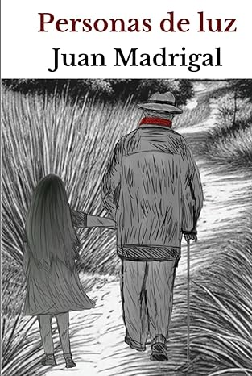

Personas de luz es una historia de amistad, de amor y de terror, que navega entre los añorados años ochenta y la Guerra Civil Española. Durante lo que iba a ser el mejor verano de los cuatro protagonistas, una tarde verán algo que cambiará sus adolescencias para siempre.
Juan Madrigal (Sevilla, 1973) es licenciado en Ciencias Químicas por la Universidad de Sevilla. Trabaja en la industria farmacéutica desde el año 2002 y comparte su tiempo entre la familia, la lectura y el Club Baloncesto Los Fieras.
El libro se desarrolla a caballo entre los años de nuestra guerra civil y los años 80, en los que un grupo de adolescentes vivirán una experiencia que cambiará sus vidas para siempre
Los fondos que se recauden con la venta de este libro irán destinados a la lucha contra la narcolepsia.
Por casualidad llegó a mis manos este libro y me animé a comprarlo. Magnífica y entrañable historia de unos amigos adolescentes que tienen que resolver un problema creado por los adultos a la sombra de nuestra terrible guerra civil. La historia fluye con facilidad y te va regalando sorpresas y posteriomente suspense, el cual te lleva enganchado hasta el final del libro. Lo que más sorprende de este libro es que sea una ópera prima, la historia de mantiene estable y con ritmo de principio a fin. No dejes de leerlo!!
Sólo basta con dar la vuelta a su primera página para que te atrape hasta el final. Para los que hemos vivido los años ochenta no hace falta que diga más, son nuestros maravillosos años 80, pero también para los padres de esos niños y para los hijos de éstos. Los personajes de la novela tienen una calidad humana totalmente real. Son maravillosos, como esos amigos de la infancia que siempre sabes que van a estar ahí. Hacía tiempo que no disfrutaba tanto con un libro. Para el próximo de este autor Cuenta conmigo.
Relato original, atrayente, bien narrado, que se lee con facilidad, agrado y que te hace rememorar buenos tiempos vividos en los años ochenta. Muy recomendable, y además sirve a una buena causa al tratar de mejorar el estudio y tratamiento de una enfermedad poco conocida. Mi enhorabuena a este proyecto.